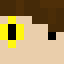
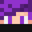

| Stát: | Stát FlaMaCraft |
|---|---|
| Druh voleb: | Prezidentské |
| Termín voleb: | Neznámý[N] - 7. Prosince 2021 |
|  |  | ||
| Matakady | MrJokeer123 | bettim | dead2009cz |
|---|---|---|---|
| DSF | Nezařezeni | Nezařezeni | Nezařezeni |
| 6 Hlasů | 1 Hlasů | 1 Hlasů | 1 Hlasů |
| 66,6% | 11.1% | 11.1% | 11.1% |
Volby prezidenta FlaMaCraftu se konaly neznámokdy a skončili 7. Prosince 2021. Během voleb vznikla strana se jménem Demokratická Strana FlaMaCraftu (DSF)[N] , jejimž jediným členem byl Matakady. Hlasy se odesílali na spawnu pomocí 3x3 prostorů s cedulkou uprostřed s názvem kandidáta. Okolo ní se potom pokládali cedulky další jenž byly hlasy. Na některé byly napsané "humorné" poznámky.
Matakady:
bettim
dead2009cz
MrJokeer123
dead2009cz:
Jak už asi všichni víme budou se blížit volby hlavy serveru která, může zahrabat server pod zem, a nebo ho poslat na příčku nejlepších a nejvskétavěješích serverů co matakady založil/vlastnil, noo a jestli se obáváte volit, protože si myslíte že zvolíte špatně a server skončí během 1. týdne běhu? Mám pro vás řešení, volte dead2009cz možná si říkáte proč by jste mi měly věřit, no například daně ta věc která nás okrádá deno denně o diamanty v nětkerých případech až o 4dia denně. Jako nebudeme si nic lhát ale to je až moc, proto chci zavést daňový systém, tak že budete platit 5 dia týdně za každou nemovitost kterou vlastníte jako nemovitost se počítá: barák, farmy a shop (do farem se počítají všechny zvířecí, nebo rostliné farmy). Pokud nechcete platit za farmy, můžete místo 5dia za farmy platit 5ti stacky sklizně, nebo masa z farem, počítá se kůže i vlna. Takže ve finále budete platit 15-20 dia týdně místo 28dia týdně, což je furt profit taky nemusíte platit každej den, ale donesete všechno na konci týdne (kdykoliv v neděly). Chci zavést demokracii ve které bude panovat pořádek a mír, zavést nether travel, zavést pravidelné demokratické volby ministra každých 14 dní Chci závést práce: Policie, Builder, farmáře těžiče. 3dia/t 4dia/t 5dia/ t každý den bude 30m těžit a 25% z toho co najde si nechá , nebo 25% sklizně. Chci vystavět lepší a hezčí spawn, a všichni dostanete 10x10 pozemek na spawnu na shop, na požádání můžete dostat až 15x15 pozemek, ale však větší pozemky už si budete muset zaplatit. Hned 1. den mojí vlády holdám vyřešit problém s nedostatkem jídla. Ptáte se jak? No jednoduše nechám postavit obrovské farmy o kterou se budou starat farmáři, rovnou u ní dostanou příbytek, aby nemusely chodit několik stovek blocků do base. A tohle je jenom zlomek mojí vlády, až budu zvolen udělám 3x víc než je tu
Matakady:
Nechte taky mě, protikandidáta k téhle situaci něco říct, Já Matakady, jakožto leader té jediné opravdu demokratické strany FlaMaCraftu spolu se svou stranou potřebujeme nejdřív získat data ohledně toho, jak bude server fungovat. Co ale jasné je: - umíme správně Češtinu - Zavedeme demokratický systém, tzn. volba prezidenta (jednou za 14 dnů), volba premiéra (jednou za 10 dnů), volba buildera (den výsledků prvních prezidentských voleb), volba policie (jednou za 10 dnů). - Zavedeme pořádek na spawnu, zajistíme nether travel, případné přesouvání portálů nad bedrock. - Provedeme průzkum daní a jejich téměř jisté snížení, zavedeme pořádek v jejich vybírání. - Zajistíme téměř non-stop online podporu a pokud to půjde - i dynamickou live mapu serveru. Nechceme nic složitě komplikovat, stavět obrovské veřejné industriální farmy je nesmysl, takhle se ze serveru stane komunisická špína. Dělily by nás dny od vzniku Sovchozů! Nedovolme aby se to stalo! To vše a ještě víc vás čeká po tom, co mě zvolíte do funkce prezidenta, volte Matakadyho!